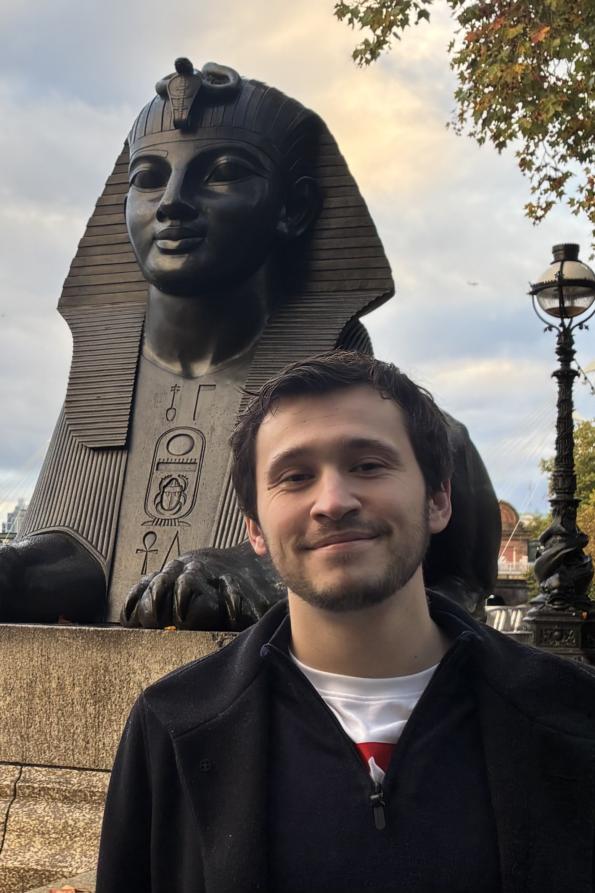

Joseph Kelly, Eleanor Fradgley, Lida Zhang, and Vincent Boyer. (2025). Mode hitching in traveling-wave optical parametric amplification. Physical Review A, 111(3), 033523. https://doi.org/10.1103/PhysRevA.111.033523
Biography
Dr. Joe Kelly
Applied physicist and systems engineer with hands-on expertise in optoelectronics, photonics, and embedded electronics. Experienced in full-stack system development, from laser-based sensor design to analog/digital circuit prototyping and PCB layout. Strong track record in R&D leadership, cross-functional collaboration, and delivering patented technologies in quantum and optical systems.
Publications
Joseph Kelly. (2024). Propagation effects within an Extended Optical Amplifier and their impact on the Spatial Distribution of squeezing: towards Quantum Imaging. University of Birmingham. PhD Thesis.
Media and Outreach
I believe that science communication and outreach are vital for inspiring optimism about research and encouraging investment in it. Below, I have listed some of my activities in this space.
Joseph Kelly. (2024). Interview on Sun, sea... and science. BBC Radio 4, July 4, 2024. https://www.bbc.co.uk/programmes/m0020pfy